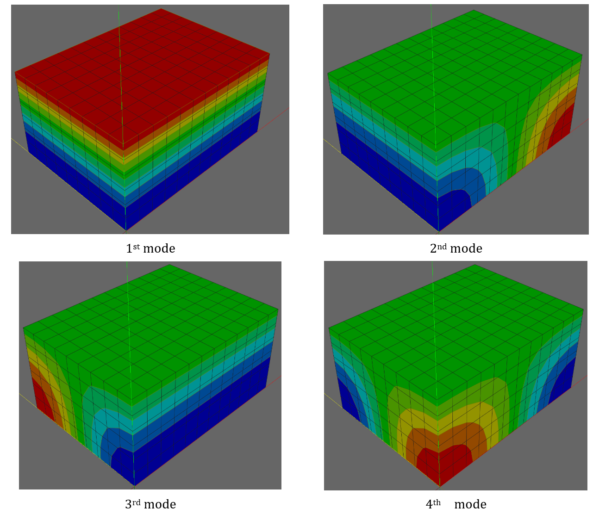
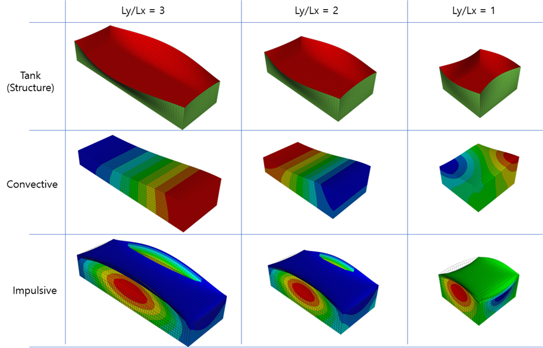
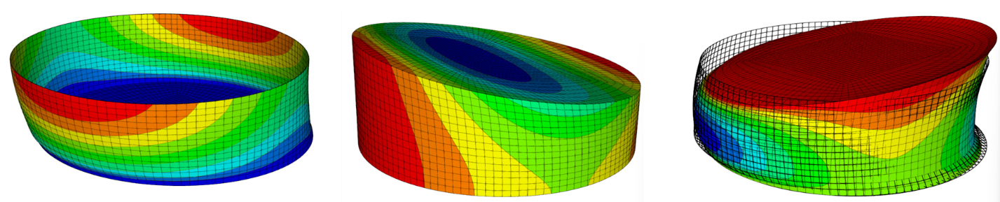
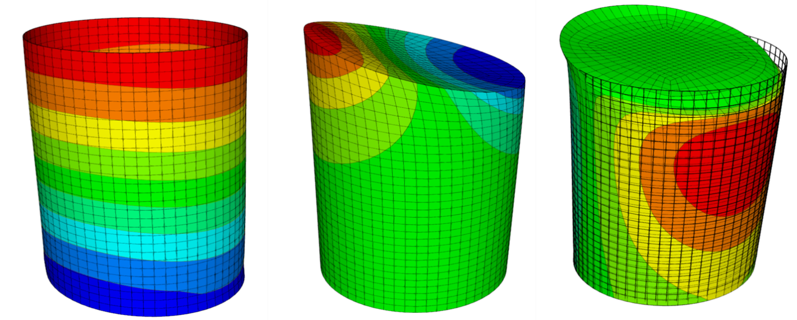
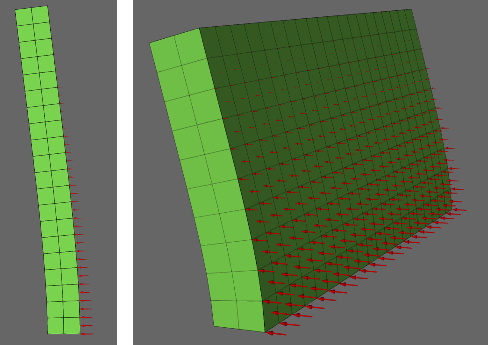
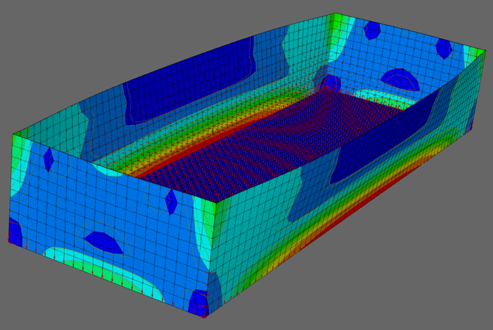
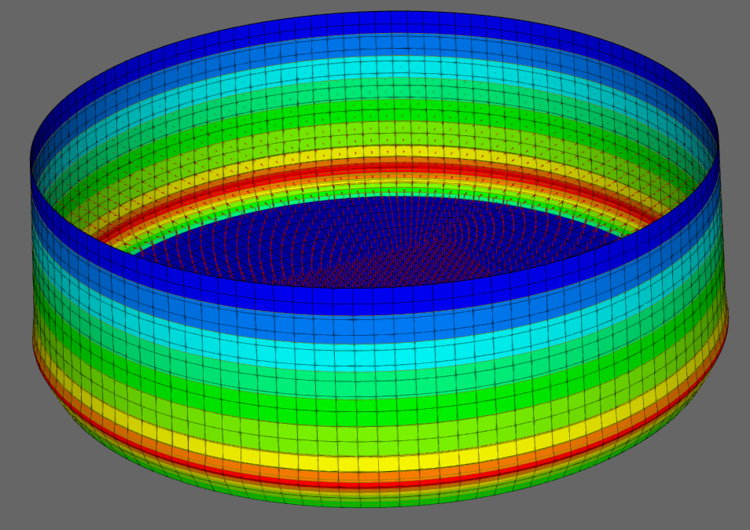

E.7 Acoustic Solid Element and HydroStaticPressure Loads
E.7.1 Impulsive Natural Frequencies in a Rigid Rectangular Tank
가로, 세로, 높이가 \(L_{x},\ L_{y},\ H\)인 강체 직사각 탱크에 담긴 압축성 유체에서, 상면은 압력이 0인 조건을 나머지 면은 플럭스가 0인 조건을 부과하면, 다음과 같은 고유치를 해석적으로 유도할 수 있다.
where
\(c\) is acoustic wave velocity, 1480 m/s/s if water
\(\alpha_{l} = \frac{l\pi}{L_{x}},\ \beta_{m} = \frac{m\pi}{L_{y}},\gamma_{n} = \frac{(2n - 1)\pi}{2H}\)
\(l,m = 0,1,2,\ldots,\ \ n = 1,2,\ldots\)
가로, 세로, 높이가 40m, 30m, 20m인 직사각 물탱크를 대상으로 3차원 조건에 대해 세가지가 메쉬에 대해 고유진동수 해석을 수행하고 그 결과를 해석해와 비교하였다.

Figure E.7.1 Contour Plot of Mode Shapes
Table E.7.1 Natural Frequencies of 3D Rigid Rectangular Tank
| l | m | n | Analytic solution | Numerical solution | |||||||||
|---|---|---|---|---|---|---|---|---|---|---|---|---|---|
| alpha | beta | gamma | wlnm | frq | 8x4 | 12x6 | 16x8 | 16x12-P6 | 16x12-P8 | 16x12-P8+T4 | |||
| 0 | 1 | 0 | 0 | 0 | 0.07854 | 116.2389282 | 18.5000 | 18.6191 | 18.5529 | 18.5297 | 18.5242 | 18.5259 | |
| 1 | 0 | 0 | 0.07854 | 0 | 0 | 164.3866687 | 26.1630 | 26.3314 | 26.2377 | 26.2054 | 26.1758 | 26.1755 | |
| 2 | 0 | 0 | 0.15708 | 0 | 0 | 193.7315497 | 30.8333 | 31.131 | 30.9654 | 30.9076 | 30.9008 | 31.0321 | |
| 0 | 2 | 0 | 0 | 0.15708 | 0 | 225.2967575 | 35.9631 | 36.2474 | 36.0653 | 35.9496 | 35.9369 | 36.3651 | |
| 1 | 1 | 0 | 0.07854 | 0.07854 | 0 | 259.918145 | 41.3673 | 42.2775 | 41.7704 | 41.5937 | 41.5099 | 42.0162 | |
| 0 | 0 | 1 | 0 | 0 | 0.07854 | 302.6185304 | 48.1632 | 49.0003 | 48.5738 | 48.3938 | 48.6972 | 49.1273 | |
| 2 | 1 | 0 | 0.15708 | 0.07854 | 0 | 343.0194616 | 53.1680 | 54.3603 | 53.2028 | 53.2827 | 53.4984 | ||
| 1 | 2 | 0 | 0.07854 | 0.15708 | 0 | 348.7167845 | 55.0038 | 57.3957 | 56.7676 | 56.3055 | 56.1504 | 56.2974 | |
| 0 | 1 | 1 | 0 | 0.07854 | 0.07854 | 350.865724 | 55.8415 | 56.9935 | 56.3651 | 56.1431 | 56.1939 | 56.1939 | |
| 1 | 1 | 1 | 0.07854 | 0.07854 | 0.07854 | 357.5797658 | 58.5021 | 61.6157 | 59.8217 | 59.0764 | 59.5911 | 59.91 | |
| 3 | 0 | 0 | 0.235619 | 0 | 0 | 367.5797658 | 58.5021 | 61.6157 | 59.8217 | 59.0764 | 59.5911 | 59.91 | |
| 2 | 2 | 0 | 0.15708 | 0.15708 | 0 | 381.8089616 | 60.7346 | 63.6522 | 61.4999 | 61.5399 | 62.0894 | ||
| 3 | 1 | 0 | 0.235619 | 0.10472 | 0.07854 | 398.9176709 | 63.49972 | 66.4765 | 64.81 | 64.2307 | 64.6278 | 65.3594 | |
| 1 | 3 | 0 | 0.07854 | 0.235619 | 0.10472 | 399.9176709 | 63.49972 | 66.4765 | 64.81 | 64.2307 | 64.6278 | 65.3594 | |
| 2 | 1 | 2 | 0.15708 | 0.20944 | 0.07854 | 404.5233462 | 64.3819 | 66.7128 | 65.4134 | 64.9680 | 65.1404 | 65.5128 | |
| 2 | 0 | 2 | 0.15708 | 0 | 0.235619 | 419.1054158 | 66.7027 | 69.9335 | 68.1335 | 67.5055 | 67.0949 | 69.9077 | |
가로, 높이가 40m, 20m인 직사각 물탱크를 대상으로 2차원 조건에 대해 세가지 메쉬에 대해 고유진동수 해석을 수행하고 그 결과를 해석해와 비교하였다. 해석해에서는 항상 \(m = 0\)인 경우이다.
Table E.7.2 Natural Frequencies of 2D Rigid Rectangular Tank
| l | m | n | Analytic solution | Numerical solution | |||||||
|---|---|---|---|---|---|---|---|---|---|---|---|
| alpha | beta | gamma | wlnm | frq | 8x4 | 12x6 | 16x8 | 16x8-T | |||
| 1 | 0 | 0 | 0 | 0 | 0.07854 | 116.2389282 | 18.5000 | 18.6191 | 18.5529 | 18.5297 | 18.5296 |
| 1 | 0 | 1 | 0.07854 | 0 | 0.07854 | 164.3866687 | 26.1630 | 26.3314 | 26.2377 | 26.2054 | 26.2881 |
| 2 | 0 | 1 | 0.15708 | 0 | 0.07854 | 259.918145 | 41.3673 | 42.2775 | 41.7704 | 41.5937 | 41.8000 |
| 0 | 2 | 0 | 0 | 0.235619 | 0 | 348.7167845 | 55.0000 | 58.7365 | 56.9352 | 56.3055 | 56.2984 |
| 3 | 0 | 0 | 0.235619 | 0 | 0.07854 | 367.5797658 | 58.5021 | 61.617 | 59.8217 | 59.2761 | 59.5851 |
| 2 | 1 | 0 | 0.07854 | 0.235619 | 0 | 419.1054158 | 66.7027 | 69.934 | 68.6325 | 67.6535 | 68.6724 |
| 4 | 0 | 0 | 0.314159 | 0 | 0.07854 | 479.2653787 | 76.2775 | 83.066 | 79.6017 | 78.1423 | 78.3488 |
| 3 | 0 | 2 | 0.235619 | 0 | 0.235619 | 493.1600601 | 78.4889 | 83.694 | 80.5185 | 79.6281 | 82.91 |
Input File
-
tank2d-8x4.inp : 2 dimensional rectangular tank, 8x4 elements, AC2D4
-
tank2d-12x6.inp : 2 dimensional rectangular tank, 12x6 elements, AC2D4
-
tank2d-16x8.inp : 2 dimensional rectangular tank, 16x8 elements, AC2D4
-
tank2d-16x8-T3.inp : 2 dimensional rectangular tank, 16x8*2 elements, AC2D3
-
tank3d-8x6x4.inp : 3 dimensional rectangular tank, 8x6x4 elements, AC3D8
-
tank3d-12x9x6.inp : 3 dimensional rectangular tank, 12x9x6 elements, AC3D8
-
tank3d-16x12x8.inp : 3 dimensional rectangular tank, 16*12*8 elements, AC3D8
-
tank3d-16x12x8-T4.inp : 3 dimensional rectangular tank, 16*12*8*6 elements, AC3D4
-
tank3d-16x12x8-P6.inp : 3 dimensional rectangular tank, 16*12*8*2 elements, AC3D6
E.7.2 Sloshing Natural Frequencies in a Rigid Rectangular Tank
비압축성 유체를 가정하는 경우, 직사각 탱크에서 유체 표면의 출렁임에 대한 고유진동수를 해석적으로 유도할 수 있다(Lamb, 1945)
where
Housner(1957)은 Fundamental frequency에대한 근사식을 다음과 같이 제안하였다.
여기에서 L은 excitation 방향의 길이이다.
Table E.7.3 Natural Frequencies of Sloshing Modes in 3D Rigid Rectangular Tank
| m | n | kmn | f | Numerical solution | ||||
|---|---|---|---|---|---|---|---|---|
| 10x30x6 | 20x60x11 | 20x60x11-P6 | 20x60x11 | 20x60x11-T4 | ||||
| 0 | 0 | 0.000 | 0.000 | 0 | 0 | 0 | 0 | |
| 0 | 1 | 0.053 | 0.084 | 0.084416 | 0.084368 | 0.084368 | 0.084372 | |
| 0 | 2 | 0.107 | 0.149 | 0.149068 | 0.148796 | 0.148783 | 0.148874 | |
| 1 | 0 | 0.160 | 0.194 | 0.195056 | 0.19439 | 0.194329 | 0.194702 | |
| 0 | 3 | 0.160 | 0.194 | 0.195056 | 0.19439 | 0.194343 | 0.195071 | |
| 1 | 1 | 0.169 | 0.200 | 0.201226 | 0.200551 | 0.200536 | 0.201349 | |
| 1 | 2 | 0.193 | 0.216 | 0.216947 | 0.216181 | 0.216238 | 0.217327 | |
| 0 | 4 | 0.214 | 0.229 | 0.230264 | 0.229004 | 0.228874 | 0.229771 | |
| 1 | 3 | 0.227 | 0.236 | 0.237313 | 0.236266 | 0.236372 | 0.237929 | |
| 0 | 5 | 0.267 | 0.257 | 0.259196 | 0.257612 | 0.257536 | 0.258952 | |
| 1 | 4 | 0.267 | 0.257 | 0.259909 | 0.257787 | 0.257734 | 0.260181 | |
| 1 | 5 | 0.312 | 0.278 | 0.281321 | 0.278901 | 0.278968 | 0.281839 | |
| 0 | 6 | 0.321 | 0.282 | 0.286557 | 0.283247 | 0.282861 | 0.285658 | |
| 2 | 0 | 0.321 | 0.282 | 0.286557 | 0.283247 | 0.282862 | 0.287921 | |
| 2 | 1 | 0.325 | 0.284 | 0.28854 | 0.285216 | 0.284879 | 0.290092 | |
| 2 | 2 | 0.338 | 0.290 | 0.294289 | 0.290893 | 0.290692 | 0.296245 | |
Table E.7.4 Natural Frequencies of Sloshing Modes in 2D Rigid Rectangular Tank
| m | km | f | Numerical solution | ||
|---|---|---|---|---|---|
| 30x6 | 60x11 | 60x11-T | |||
| 0 | 0.000 | 0.000 | 0 | 0 | 0 |
| 1 | 0.053 | 0.084 | 0.084416 | 0.084368 | 0.084372 |
| 2 | 0.107 | 0.149 | 0.149068 | 0.148796 | 0.148875 |
| 3 | 0.160 | 0.194 | 0.195056 | 0.19439 | 0.194722 |
| 4 | 0.214 | 0.229 | 0.230264 | 0.229004 | 0.229799 |
| 5 | 0.267 | 0.257 | 0.259909 | 0.257787 | 0.259258 |
| 6 | 0.321 | 0.282 | 0.286557 | 0.283247 | 0.285611 |
| 7 | 0.374 | 0.305 | 0.311438 | 0.306572 | 0.310062 |
| 8 | 0.427 | 0.326 | 0.335203 | 0.323875 | 0.333244 |
| 9 | 0.481 | 0.346 | 0.358247 | 0.349017 | 0.355533 |
| 10 | 0.534 | 0.364 | 0.380845 | 0.368738 | 0.377183 |
| 11 | 0.588 | 0.382 | 0.403204 | 0.387712 | 0.398377 |
Input File
-
sloshing2d-30x6.inp : 2 dimensional rectangluar tank, 30*6 elements, AC2D4
-
sloshing2d-60x11.inp : 2 dimensional rectangluar tank, 60*11 elements, AC2D4
-
sloshing2d-60x11-T3.inp : 2 dimensional rectangluar tank, 60*11*2 elements, AC2D3
-
sloshing3d-10x30x6.inp : 3 dimensional rectangluar tank, 10*30*6 elements, AC3D8
-
sloshing3d-20x60x11.inp : 3 dimensional rectangluar tank, 20*60*11 elements, AC3D8
-
sloshing3d-20x60x11-T4.inp : 3 dimensional rectangluar tank, 20*60*11*6 elements, AC3D4
-
sloshing3d-20x60x11-P6.inp : 3 dimensional rectangluar tank, 20*60*11*6 elements, AC3D6
E.7.3 Rectangular Liquid Storage Tank Analysis
가로, 세로, 높이가 \(L_x\), \(L_y\), \(H\)인 직사각 탱크를 대상으로 다양한 형상비에 대해 고유진동수를 계산하였다. 치수와 재료 물성은 다음과 같다.
Table E.7.5 Dimensions and Material Properties of Rectangular Tanks
| Ly/Lx = 3 | Ly/Lx = 2 | Ly/Lx = 1 | |
|---|---|---|---|
| Liquid length, Lx | 20 m | 20 m | 20 m |
| Liquid length, Ly | 60 m | 40 m | 20 m |
| Depth, H | 10 m | 10 m | 10 m |
| Water density | 1,000 kg/m3 | ||
| Wall height, Hw | 10 m | ||
| Young's modulus, E | 20.776 GPa | ||
| Wall thickness, tw | 1 m | ||
| Poisson's ratio | 0.17 | ||
| Wall density | 2,300 kg/m3 | ||
다음 표는 convective 및 impulsive 성분에 대한 결과이다.
Table E.7.6 Fundamental Frequencies of Rectangular Tanks (Hz)
| Ly/Lx = 3 | Ly/Lx = 2 | Ly/Lx = 1 | ||||
|---|---|---|---|---|---|---|
| FEM | Reference | FEM | Reference | FEM | Reference | |
| Tank only | 5.329 | - | 5.918 | - | 9.221 | - |
| Water only (Convective) | 0.07908 | 0.07907 (Lamb, 1945) | 0.1132 | 0.1131 (Lamb, 1945) | 0.1895 | 0.1892 (Lamb, 1945) |
| FSI (Convective) | 0.07904 | - | 0.1131 | - | 0.1894 | - |
| FSI (Impulsive) | 3.803 | - | 4.234 | - | 6.676 | - |

Figure E.7.2 Modes of Rectangular Tanks
Input File
rect.inp
hfAnalyzer rect.inp -p "3-Fine" # Ly/Lx = 3
hfAnalyzer rect.inp -p "2-Fine" # Ly/Lx = 2
hfAnalyzer rect.inp -p "1-Fine" # Ly/Lx = 1
E.7.4 Cylindrical Liquid Storage Tank Analysis
원통형 탱크를 대상으로 강체 조건(유체만 고려)과 유연체 조건(유체-구조물 상호작용계)에 대한 고유치 해석을 Haroun and Housner(1981)에서 제시한 Broad Tank와 Tall Tank에 대해 수행하였다.
Table E.7.7 Dimensions and Material Properties of Cylindrical Tanks
| Tall Tank | Broad Tank | |
|---|---|---|
| Radius, R | 7.32 m | 18.3 m |
| Water height, H | 21.96 m | 12.2 m |
| Wall height, Hs | 21.96 m | 12.2 m |
| Wall thickness, t | 2.54 cm | 2.54 cm |
| Water density | 1,000 kg/m3 | |
| Water bulk modulus, Kw | 2.1904E+9 N/m2 | |
| Wall density | 7,840 kg/m3 | |
| Wall Poisson's ratio | 0.3 | |
| Wall elasticity | 206.7 GPa | |
Tank만 모델링한 경우, 유체만 모델링하여 convective 성분을 구한 경우, 유체-구조물 상호작용계의 convective와 impulsive 성분을 구한 경우를 coarse 및 fine mesh 조건에 대해 계산하였다. 원통형 탱크는 국부 모드가 많으므로 Effective Modal Mass Ratio가 0.01 이하인 모드를 배제하는 방식으로 모드를 계산하였다.
Table E.7.8 Fundamental Frequencies of Cylindrical Tanks (Hz)
| Tall Tank | Broad Tank | |||||
|---|---|---|---|---|---|---|
| FEM-Coarse Mesh | FEM-Fine Mesh | Reference | FEM-Coarse Mesh | FEM-Fine Mesh | Reference | |
| Tank only | 19.1747 | 19.1706 | - | 34.0506 | 34.0155 | - |
| Water only (Convective) | 0.250887 | 0.250416 | 0.2500 (Veletsos, 1984) | 0.145256 | 0.145158 | 0.1451 (Veletsos, 1984) |
| FSI (Convective) | 0.250762 | 0.250291 | - | 0.145196 | 0.145097 | - |
| FSI (Impulsive) | 5.32744 | 5.30438 | - | 6.20135 | 6.15999 | - |
Convective mode에 대한 고유치(sloshing frequency)는 비압축성 유체를 가정한 강체 탱크 조건에서 유도할 수 있다. Veletsos(1984)는 다음과 같은 정해(analytic solution)를 유도하였다.
여기에서 \(\lambda_j\)는 \(\frac{dJ_1(x)}{dx} = 0\)의 해이며, 저차 3개 값은 \(\lambda_1 = 1.8411837813406593\), \(\lambda_2 = 5.331442773525033\), \(\lambda_3 = 8.536316366346286\)이다. 표에서는 Veletsos(1984)의 해를 기준해로 제시한다.
Housner(1957)은 fundamental frequency에 대한 근사식을 다음과 같이 제안하였다.

Figure E.7.3 Modes of the Broad Cylindrical Tank (Fine Mesh): tank-only, convective water-only, and impulsive FSI modes from left to right.

Figure E.7.4 Modes of the Tall Cylindrical Tank (Fine Mesh): tank-only, convective water-only, and impulsive FSI modes from left to right.
Input File
cylinder.inp
hfAnalyzer cylinder.inp -p "B-Fine" # Broad tank (Fine Mesh)
hfAnalyzer cylinder.inp -p "B-Coarse" # Broad tank (Coarse Mesh)
hfAnalyzer cylinder.inp -p "T-Fine" # Tall tank (Fine Mesh)
hfAnalyzer cylinder.inp -p "T-Coarse" # Tall tank (Coarse Mesh)
E.7.5 HydroStaticPressure Verification
그림과 같이 2D, 3D 솔리드 요소로 모델링한 구조체를 대상으로 HydroStaticPressure를 검증한다. 2D 예제는 폭 \(1\,\mathrm{m}\), 높이 \(10\,\mathrm{m}\)의 CPS4 solid wall을 요소 크기 \(0.5\,\mathrm{m}\)로 나눈다. 3D 예제는 두께 \(1\,\mathrm{m}\), global \(Y\) 방향 재하 길이 \(10\,\mathrm{m}\), global \(Z\) 방향 캔틸레버 높이 \(5\,\mathrm{m}\)의 C3D8 solid wall을 요소 크기 \(0.5\,\mathrm{m}\)로 나눈다. 2D 예제는 고정단 edge를 구속한다. 3D 예제는 \(Z=0\)인 바닥면을 구속하므로 global \(Z\) 방향 캔틸레버로 거동한다. 두 예제 모두 \(X\) 양의 면에 정수압을 가력한다. 2D 예제의 자유수면은 \(Y=10\,\mathrm{m}\), 3D 예제의 자유수면은 \(Z=5\,\mathrm{m}\)에 두며, 단위중량은 \(\gamma=9810\)이다.

Figure E.7.5 SurfaceDistributed 정수압 검증을 위한 2D 및 3D solid cantilever 모델.
기대 합력은 다음과 같다.
두번째 예제로 이전절의 rect.inp, cylinder.inp 예제를 변형하여 유체 대신 정수압을 가력한다. 다음 응력값은 정수압 리포팅 해석의 최종 frame에서 얻은 값이다. 각 항목은 선택한 하단 응력 요소의 shell stress point 전체에 대한 최소/최대값을 요약한 것이며, 응력 단위는 MPa이다.

Figure E.7.6 정수압 리포팅 검증에 사용한 rectangular tank 모델.

Figure E.7.7 정수압 리포팅 검증에 사용한 cylindrical tank 모델.
Table E.7.9 HydroStaticPressure 리포팅 예제의 하단부 응력 결과
| 모델 | Parameter | 위치 | 요소 | S11,min | S11,max | S22,min | S22,max | max |S12| |
|---|---|---|---|---|---|---|---|---|
| 사각형 | 1-Fine | 장변 중앙부 | 1000611 | -3.826 | 3.946 | -0.628 | 0.659 | 0.052 |
| 사각형 | 1-Fine | 단변 중앙부 | 1000810 | -3.826 | 3.946 | -0.628 | 0.659 | 0.052 |
| 사각형 | 2-Fine | 장변 중앙부 | 1001021 | -7.435 | 7.511 | -1.257 | 1.276 | 0.016 |
| 사각형 | 2-Fine | 단변 중앙부 | 1001410 | -3.563 | 3.709 | -0.584 | 0.619 | 0.052 |
| 사각형 | 3-Fine | 장변 중앙부 | 1001431 | -8.261 | 8.288 | -1.403 | 1.410 | 0.004 |
| 사각형 | 3-Fine | 단변 중앙부 | 1002010 | -3.550 | 3.697 | -0.581 | 0.617 | 0.051 |
| 원통형 | B-Fine | 하단 한 점 | 1786 | -40.868 | 40.868 | -2.269 | 49.547 | 6.183 |
Input File
hydrostatic-surface2d-cantilever.inp: 2D solid cantilever에서 variablePressure와HydroStaticPressure를 비교.hydrostatic-surface3d-cantilever.inp: 3D solid cantilever에서 variablePressure와HydroStaticPressure를 비교.hydrostatic-rect.inp: rectangular tank의1-Fine,2-Fine,3-Fineparameter에 대해 선택 변위, 반력, 하단부 응력 결과를 출력.hydrostatic-cylinder.inp: cylindrical broad tank의B-Fineparameter에 대해 선택 변위, 반력, 하단부 응력 결과를 출력.
hfAnalyzer hydrostatic-surface2d-cantilever.inp
hfAnalyzer hydrostatic-surface3d-cantilever.inp
hfAnalyzer hydrostatic-rect.inp -p "1-Fine"
hfAnalyzer hydrostatic-rect.inp -p "2-Fine"
hfAnalyzer hydrostatic-rect.inp -p "3-Fine"
hfAnalyzer hydrostatic-cylinder.inp -p "B-Fine"
References
-
Lamb, H. (1945). Hydrodynamics, 6th Edition, Dover Publications.
-
Veletsos, A. S. (1984). Seismic response and design of liquid storage tanks. Guidelines for the Seismic Design of Oil and Gas Pipeline Systems, ASCE.
-
Housner, G. W. (1957). Dynamic pressures on accelerated fluid containers. Bulletin of the Seismological Society of America, 47(1), 15-35.
-
Haroun, M. A., & Housner, G. W. (1981). Earthquake response of deformable liquid storage tanks. Journal of Applied Mechanics, 48(2), 411-418.
-
Haroun, M. A. (1983). Vibration studies and tests of liquid storage tanks. Earthquake Engineering & Structural Dynamics, 11(2), 179-206.
-
Lee, J. H., & Cho, J.-R. (2024). Simplified earthquake response analysis of rectangular liquid storage tanks considering fluid-structure interactions. Engineering Structures, 300, 117157.